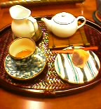
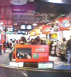
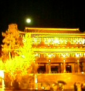
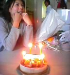

>
Ooicho at Hachimangu... 木の先の方、すでに散り加減でしたが、、なんか人影あやしく黄泉っぽい、。
>
それはそうと、カフェ・ヴィヴモン・ディモンシュ！いいよ。かなり。いや、いいカフェつったら、メニューがどれもおいしそうで、ダラダラ居心地のいいカフェに決まってらぁ、ゆう気になります。駅から小町通りに入って最初の十字路を左折50メートルあたり右手の店。
DATE: 02-11-30 12:28
PLACE: 神奈川県鎌倉市
>
Necokan at Kyodo... タイトルイラストもらってる。最近はテクスチャーに凝っているらしい。
>
高校の、行事っぽいの、たのしくなかったよねぇ、そもそも楽しもうゆう気があったのかどうか、あやしいけどねぇ、なんでだったろうね、てゆうような話。
DATE: 02-11-29 21:21
PLACE: 東京都世田谷区

>
Tea & Gallary in the afternoon... ひーるにさーぼって、オーチャヤーナリー。ちなみに銘柄は白毫烏龍茶、発酵度が高くて紅茶に近くて云々かんぬん、主観的にはですねぇ、んー、渋くない烏龍茶に花香。
>
あ、さらにちなみに連れのひとの飲んでたのは清茶、やっぱ烏龍茶ですが発酵度が低く、日本の緑茶に近くてどうのこうの。
DATE: 02-11-26 15:50
PLACE: 東京都文京区

>
HMV Shibuya in the afternoon... ひーるにさーぼって、レーコヤーナリー。ちなみにお昼は「龍本」て寿司や。握り一丁前が840円と嬉しい。味・雰囲気ともヨシ。戸、開け閉めにコツがいるよう。
>
あ、さらにちなみに買ったのはカーティス・メイフィールド『new world order』、さむい季節にココロ埋めるのにもってこいさ。私ひとつ、あきらめごと、しましたよ。
DATE: 02-11-21 14:26
PLACE: 東京都渋谷区

>
Chion-in with a Moon... 叫びたいな、なんとなく。
>
「蓮月茶や」という店で、とうふ料理を食べ申した。隣り合わせた客人ら、食マニアらしく、食事中、食い物の話題に終始、量はともかくも気分は満腹せり。
DATE: 02-11-18 18:35
PLACE: 京都府東山区

>
Birthday Girl with a Cold... 七五三と同じ日だと言われるのだが、七五三て何月何日だか知らんでしょ、ふつう。